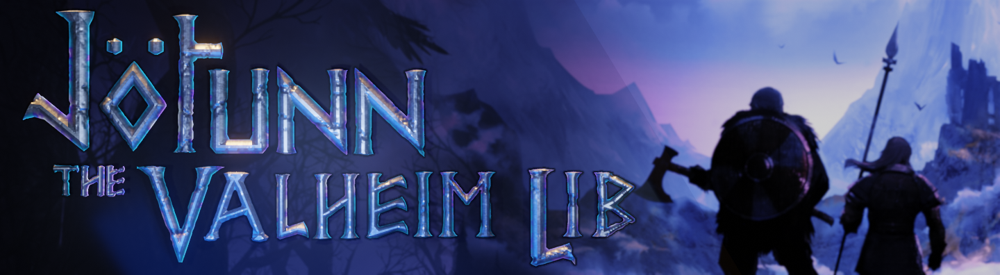

Jötunn, the Valheim Library
Jötunn (/ˈjɔːtʊn/, "giant"), the Valheim Library was created with the intent to facilitate developer creativity, unify the communities problem solving efforts, and enhance developer productivity by curating a library of common helper utilities, as well as interfaces and abstractions which aid with mod interoperability and networked gameplay consistency.
We have lots of features planned for the future, and did hold back on what we wanted to release with so that we could focus on house keeping post-merger, however I hope the features we have implemented thus far prove to be a useful base and provide an idea of the consistency we aim to deliver moving forwards.
Source code
The source code for Jötunn (and the accompanying test/demo mod) is available on GitHub.
Getting started
A quick overview of the prerequisites to start using Jötunn for beginners and advanced users can be found here.
Tutorials
This section contains tutorials on how to get started with Valheim modding using Jötunn. View it here
note: the tutorial uses the Mod Stub to work towards creating the final Example mod from scratch. If you just want to look up some of the concepts of Jötunn skip the intro part and browse to the specific topic you are interested in.
Conceptual
This section contains information about how Valheim itself works, as well as how JötunnLib interfaces with the game. There likely will not be many code examples here, but rather high level overviews of how various systems work. View it here
API Documentation
This section contains documentation on all of the public code within JötunnLib. View it here
Contributing
Notice anything that can be improved, either in the docs or in the library itself?
Check the contributing guide and submit an issue or a pull request on GitHub!
Discord
Feel free to join our discord.